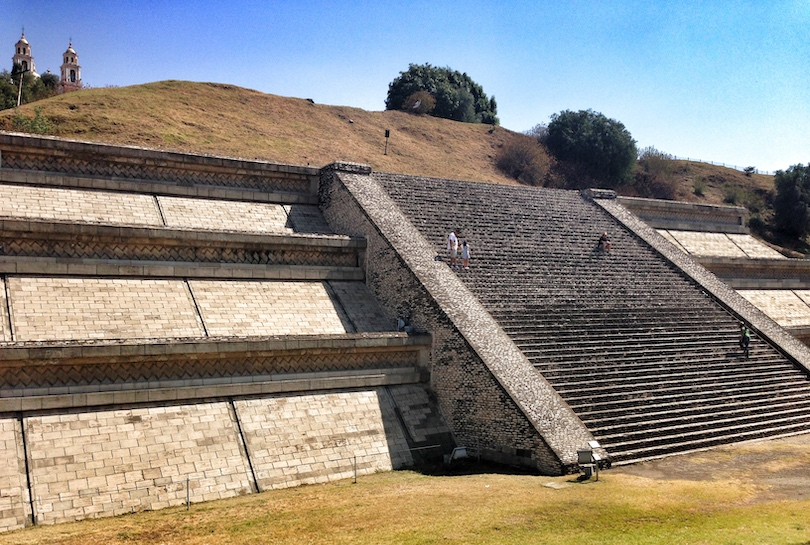
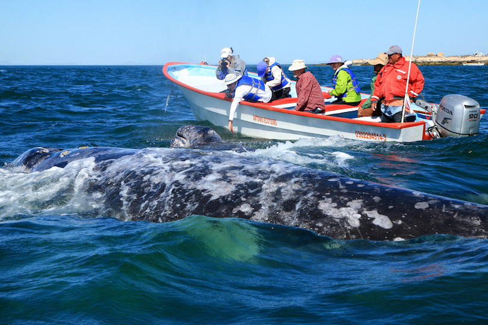
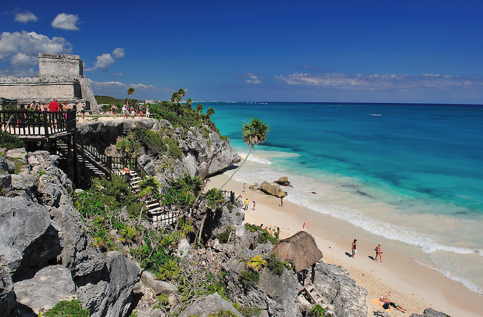
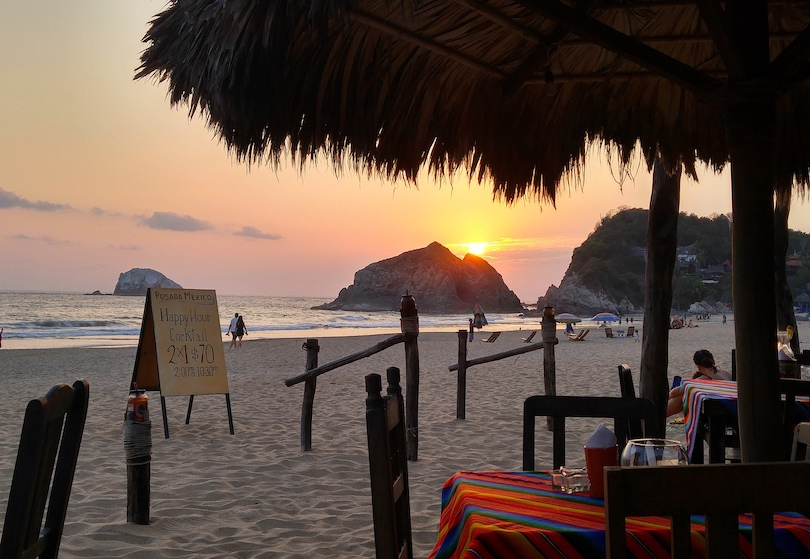

Chichén Itzá , Ancient ruined Mayan city in Mexico's Yucatán state. Chichén Itzá was founded by the Maya about the 6th century AD in an arid region where water was obtained from natural wells called cenotes.
Cholula was the center of worship for Quetzalcoatl, one of the Mayans' most important gods. When the Aztecs eventually arrived, they were amazed by Cholula's size. They believed the mythological giant Xelhua must have built it.
Baja California's San Ignacio Lagoon is the primary calving ground for eastern Pacific gray whales and part of Mexico's El Vizcaíno Biosphere Reserve—the largest wildlife refuge in Latin America.
Tulum is the site of a pre-Columbian Mayan walled city which served as a major port for Coba, in the Mexican state of Quintana Roo. The ruins are situated on 12-meter-tall (39 ft) cliffs along the east coast of the Yucatán Peninsula on the Caribbean Sea.
Zipolite is best known as being Mexico's first and only legal public nude beach and for retaining much of the hippie culture that made it notable in the 1970s. The beach is currently popular with foreign tourists, especially backpackers, who stay in one of the many rustic cabins or camping spaces that line the beach.